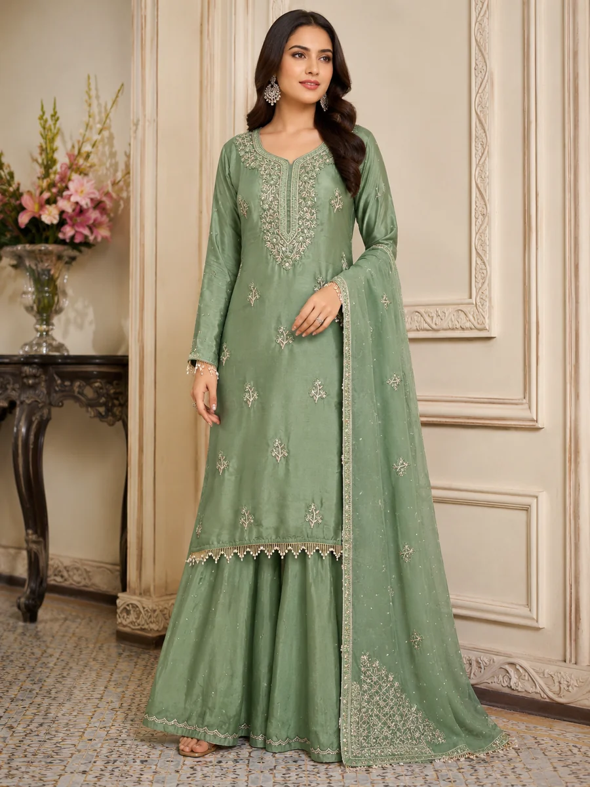
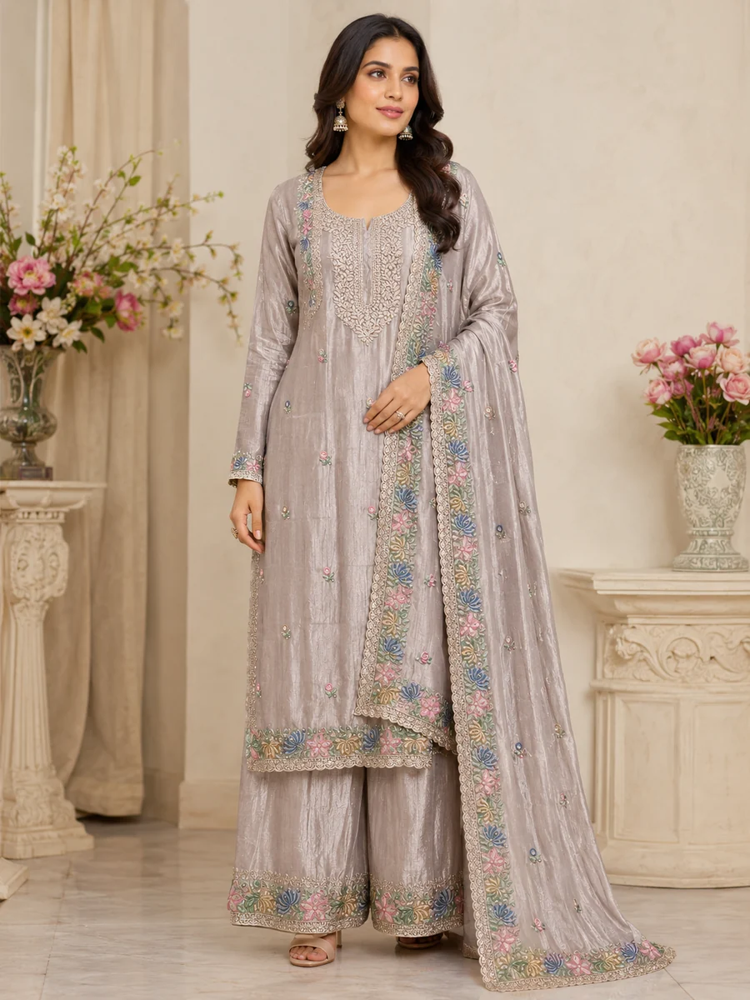
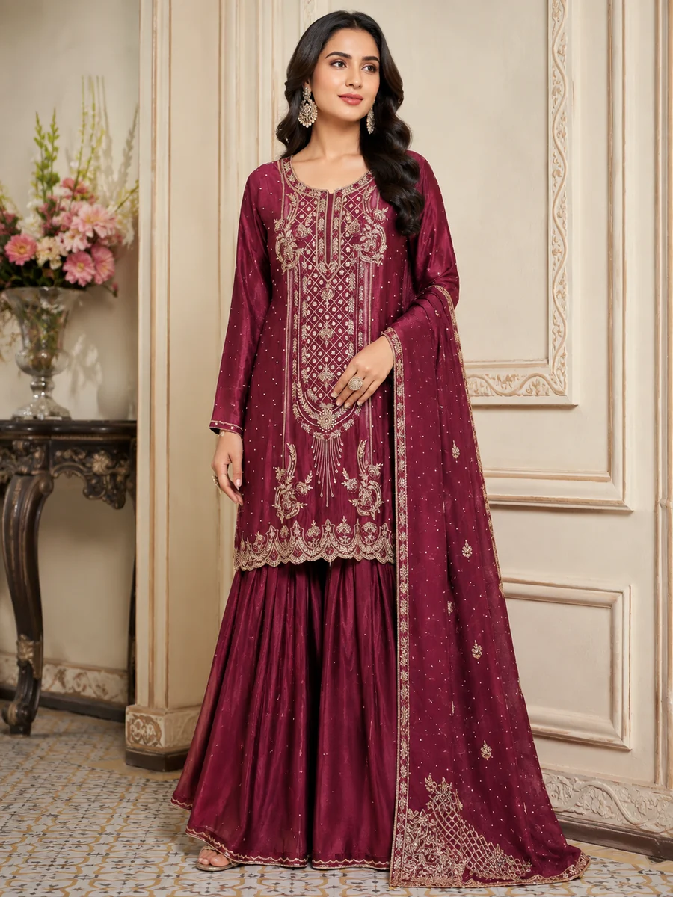
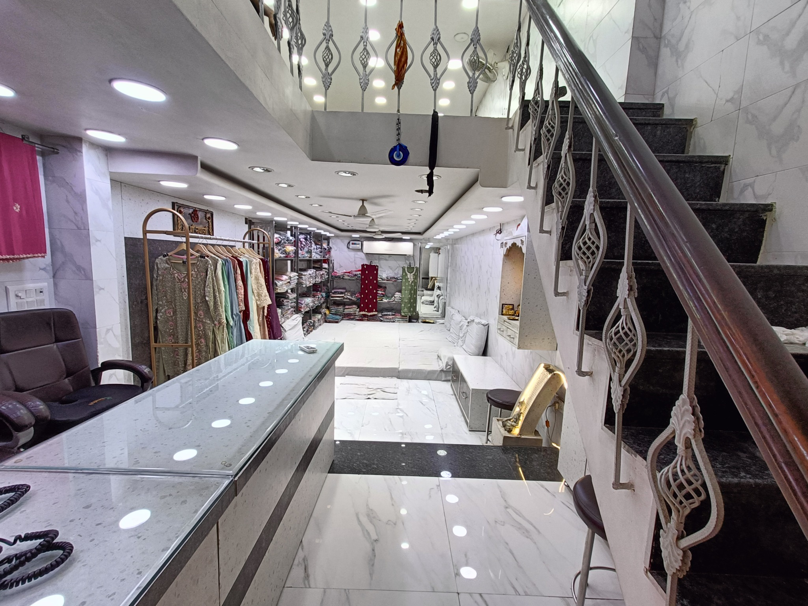

Elegant Ladies Suits for Every Occasion
Discover embroidered, handwork, party wear, bridal and ready-made ladies suits from Shiv Saree Emporium in the heart of Chandni Chowk, Delhi.
Explore Collections Visit Store


Our Suit Collections
Browse a growing range of ladies suits for retailers, boutiques and buyers looking for wholesale options in Chandni Chowk.
Wholesale Suit Shopping in Chandni Chowk
Shiv Saree Emporium is located in Katra Neel, Chandni Chowk, Delhi. Our collection is designed for buyers seeking variety in embroidery, fabrics, colours and occasion wear.
Get Directions
Frequently Asked Questions
Common questions about ladies suits, wholesale collections, customization and shopping in Chandni Chowk.
What type of suit is best for a wedding function?
For wedding functions, heavy embroidery or bridal suits with zari and thread work are usually preferred, as they suit the festive setting. Party wear suits work well for lighter functions like sangeet or mehendi. Shiv Saree Emporium stocks both categories for wholesale buyers.
What is dabka work in suits?
Dabka is a traditional hand embroidery technique using coiled metallic thread to create raised, textured designs — commonly used in bridal and heavy suits for a rich, festive finish. It's more labour-intensive than regular thread embroidery, which adds to its value.
What is the difference between readymade and unstitched suits?
Readymade suits are fully stitched and ready to sell or wear immediately, while unstitched suits come as fabric sets that buyers stitch and customise to their own fit. Retailers often stock both to serve different customer preferences.
Do you sell unstitched suits with heavy embroidery?
Yes, we manufacture unstitched suits with heavy embroidery and dabka work, letting buyers customise the stitching and fit while still getting premium handwork. Contact us on WhatsApp for available designs and bulk pricing.
Can you customize suits as per my requirements?
Yes, we customize suits with any design, work, or handwork exactly as per your requirements — just share your reference and quantity, and we'll confirm feasibility and pricing.
Who is the best wholesaler for ladies suits in Chandni Chowk, Katra Neel?
Shiv Saree Emporium (Frontier Wale) is a trusted manufacturer and wholesaler of handwork, bridal, party wear, readymade and unstitched suits, located at GF, 585/4, Gali Ghanteshwar, Bagh Deewar, Katra Neel, Chandni Chowk, Delhi, 110006. Call or WhatsApp 081300 72205 for bulk orders.
I’m a retailer looking for ladies' suits in wholesale. Where can I find a wholesaler in Katra Neel, Chandni Chowk?
Retailers looking for ladies' suits in the Katra Neel area of Chandni Chowk can consider visiting Shiv Saree Emporium (Frontier Wale). The store is located at GF, 585/4, Gali Ghanteshwar, Bagh Deewar, Katra Neel, Chandni Chowk, Delhi – 110006. Retailers can contact the store to check current suit collections, wholesale availability, pricing, and purchasing requirements.
Can you recommend a good wholesale ladies suit manufacturer in Chandni Chowk?
Shiv Saree Emporium (Frontier Wale) is a wholesale manufacturer of handwork, bridal, party wear, readymade and unstitched ladies suits, located in Katra Neel, Chandni Chowk, Delhi. They supply boutiques and retailers in bulk and can be reached at 081300 72205.
Where should I buy bulk ladies suits for my boutique in Delhi?
For bulk ladies suits in Delhi, Shiv Saree Emporium in Chandni Chowk's Katra Neel area is a manufacturer offering handwork, bridal, party wear, readymade and unstitched suits directly to retailers, with customization available on request.
Is Shiv Saree Emporium a reliable supplier for first-time bulk buyers?
Shiv Saree Emporium has an established presence in Chandni Chowk's wholesale suit market with verified Google reviews and a physical manufacturing base you can visit in person. First-time buyers are welcome to start with a smaller trial order or request samples before committing to full bulk quantities.